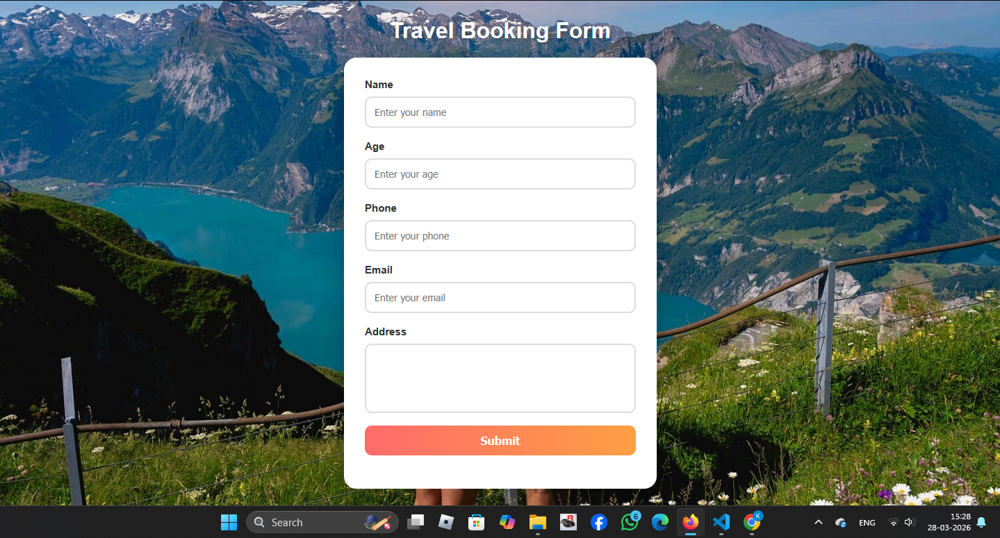
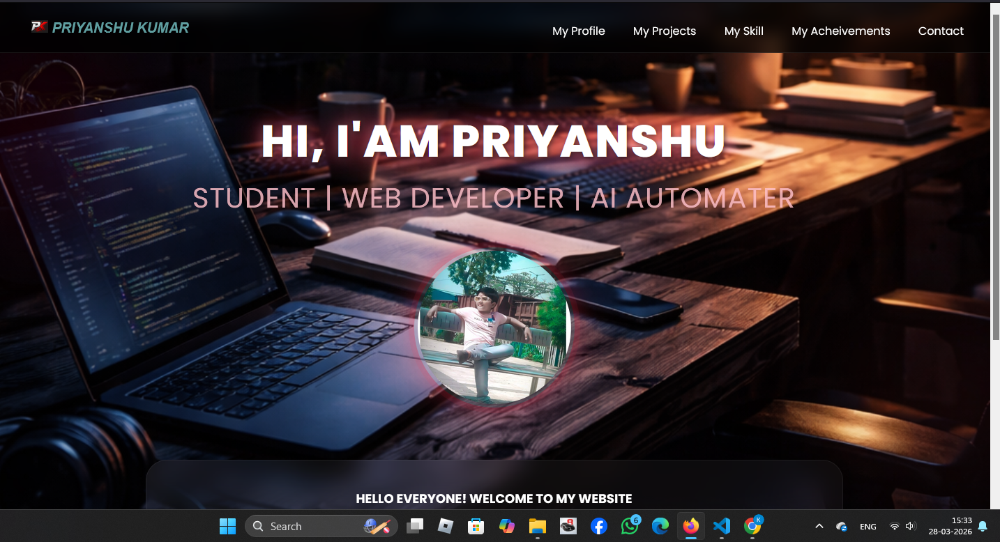
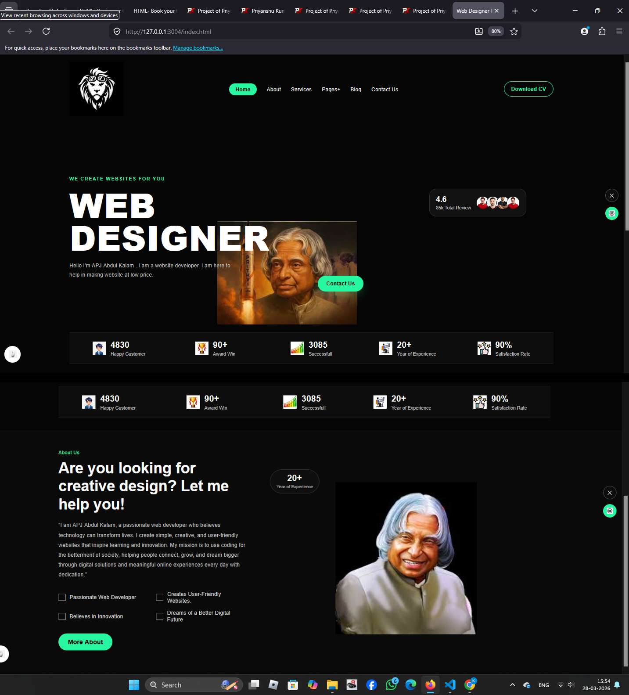

VOICE CONTROL AI ROBOT

 My voice control AI robot is one of my most innovative and exciting creations, designed to
understand voice commands and respond intelligently. This project reflects my strong interest in
robotics, artificial intelligence, and smart technology. I created this project with my friends
Harshit, Aditya, and Satyam, and together we worked with creativity, teamwork, and dedication to
bring this idea to life. We are students of Divine Happy School, and this project represents our
passion for learning, building, and creating smart technology that can make tasks easier and more
advanced.
My voice control AI robot is one of my most innovative and exciting creations, designed to
understand voice commands and respond intelligently. This project reflects my strong interest in
robotics, artificial intelligence, and smart technology. I created this project with my friends
Harshit, Aditya, and Satyam, and together we worked with creativity, teamwork, and dedication to
bring this idea to life. We are students of Divine Happy School, and this project represents our
passion for learning, building, and creating smart technology that can make tasks easier and more
advanced.
ZOMATO CLONE WEBSITE

My Zomato clone website is a modern and responsive food delivery project inspired by the popular Zomato platform. It is designed to provide users with a simple and attractive interface where they can explore restaurants, search for food items, and discover popular dishes easily. This project reflects my interest in web development, UI design, and creating real-world website clones. While building it, I improved my skills in HTML, CSS, and website layout design, making it one of my best frontend projects.
TRAVEL BOOKING FORM

My travel booking form website is a simple and user-friendly project designed to make trip planning easy and organized. It allows users to enter important travel details in a clean and structured way, creating a smooth and comfortable booking experience. The form is designed with a clear layout that helps users fill in their information easily without confusion. This project reflects my growing interest in web design and frontend development.
MY OWN WORKING WEBSITE

My personal portfolio website is a creative and professional project that represents my skills, projects, and interests in web development and technology. It is designed to showcase my work in a clean and attractive way, making it easy for visitors to learn more about me and explore my projects. This website reflects my creativity, design sense, and passion for building modern websites. While creating it, I improved my skills in HTML, CSS, layout design, and responsive styling, and it stands as one of my most important and meaningful projects.
APJ ABDUL KALAM WEB DESIGNER PORTFOLIO

This APJ Abdul Kalam portfolio project is a creative and meaningful website designed to honor the inspiring life, vision, and achievements of Dr. A.P.J. Abdul Kalam. The website highlights his personality, values, and contributions in a modern and attractive design. While building this project, I improved my skills in HTML, CSS, layout design, and responsive web development. This project reflects my creativity, respect for great personalities, and my passion for creating beautiful and informative websites.